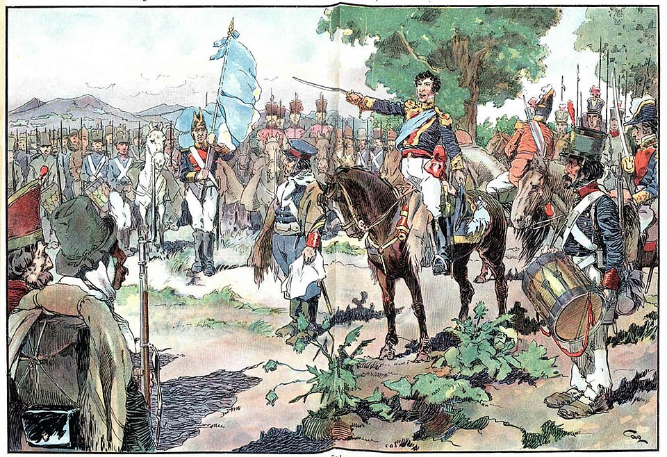

Belgrano enarbola en Rosario una bandera celeste y blanca para estas provincias
Al inaugurar las baterías que ha levantado sobre el río, el general hizo jurar a sus soldados una enseña con los colores de la escarapela, para que dejen de pelear bajo estandarte ajeno. Nadie la había autorizado; ya flamea.

En la barranca del Paraná, donde acaba de plantar las baterías Libertad e Independencia para cerrar el río a los buques realistas, el general Manuel Belgrano ofreció esta tarde a sus tropas algo que ningún reglamento contemplaba: una bandera propia. «Siendo preciso enarbolar bandera, y no teniéndola, la mandé hacer celeste y blanca, conforme a los colores de la escarapela nacional», escribió al gobierno con esa franqueza suya que no pide permiso sino que lo da por sentado.
Frente a la formación, el abogado metido a general arengó a sus soldados: «Juremos vencer a nuestros enemigos interiores y exteriores, y la América del Sud será el templo de la independencia y de la libertad». Las palabras exceden con mucho lo que el Triunvirato de Buenos Aires, siempre cauto con España y con los ingleses, se atreve a decir en voz alta. No sería extraño que la audacia le valiera al general un tirón de orejas, y que esta bandera deba esconderse un tiempo antes de flamear del todo.
El general que hoy corta este nudo no es hombre de cuarteles sino de libros: abogado formado en Salamanca, economista que predicó desde el Consulado el fomento de las escuelas, de la agricultura y de las manufacturas cuando nadie hablaba de esas cosas, vocal de la Junta de Mayo metido a jefe militar por necesidad de la revolución. Hace apenas nueve días, el Triunvirato le concedió a su pedido la escarapela blanca y celeste para todo el ejército, en reemplazo de la roja que también usan los realistas: distinguirse o confundirse, argumentó. La bandera de hoy no es más que la consecuencia que el gobierno no se animó a firmar: si la escarapela es de la patria, ¿bajo qué paño juran sus soldados?
La ceremonia fue breve y a la intemperie, como corresponde a un ejército pobre: formada la tropa junto a la batería Independencia, con el caserío de Rosario entero de testigo —unas pocas centenas de almas, contando los curiosos llegados a caballo—, el general encargó izar el paño nuevo, cosido a las apuradas con género que se consiguió en el villorrio, y las armas presentaron honores mientras el Paraná pasaba ancho y de testigo. La tradición del pueblo ya guarda el nombre del vecino que tiró de la driza: Cosme Maciel. No hubo más pompa; hubo, cuentan los presentes, un silencio raro antes del viva, como si la tropa entendiera que juraba por algo que todavía no existe y que justamente por eso hay que jurarlo.
Poco importa. Los soldados que hoy juraron ante el paño celeste y blanco ya no lo olvidarán, y las cosas juradas por soldados tienen la costumbre de sobrevivir a los gobiernos que las prohíben. En estas orillas nació hoy algo más que una insignia militar: nació la señal, visible a la distancia, de que estas provincias empiezan a pelear por algo que ya no cabe bajo el estandarte del rey.